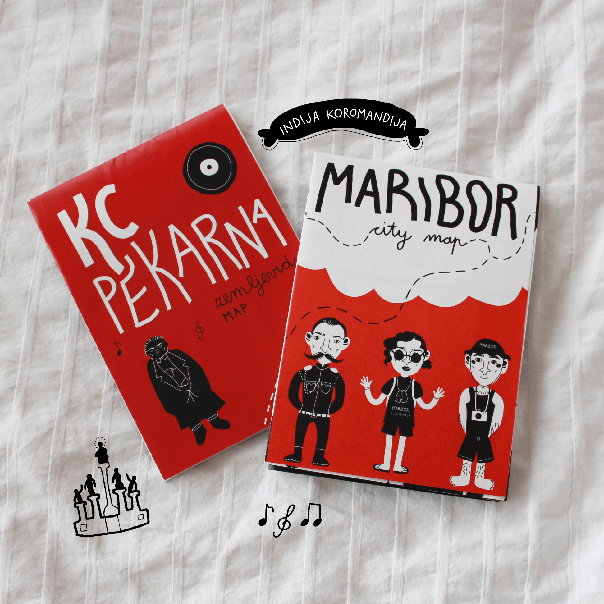

this might be a bit of a dramatic entry:') our relationship is going through it's trials and tribulations and right now we're in a rough patch. being away from you made me realize how much I've changed throughout my life, and returning to you made me feel a terrible sense of alienation; it oddly feels like being 16 again. I get that it's a part of the process to come to terms with your past self and heal old wounds, but right now I can’t help but feel an urge to run away from you and never return.
however, I believe we'll sort it out and time will patch up our conflict. I understand that I wouldn't be where I am if not for you, and the pain you brought had a greater purpose. someday I'll be able to truly appreciate what you gave me and value the good times that we spent together, I'm just not there yet.
because this is a love letter (not a hate one - though it might seem so by the way this started), I'll write a collage of happy memories that I associate with you. from city park playground and skipping kindergarden to go to pobrežje and visit grandma, to drawings of mom when she went to work (smudged by my tears), becoming an older sister, screaming nk maribor chants at soccer matches with dad, piano lessons (photo 3), cicero after school (blue red bull lollipops for 15 cents or a watermelon one with gum inside for 30 cents - for more luxurious tastes), čajek (photo 4), the memorabilia wall in my room (photo 2), first dives into design and illustration (photo 5). some of the most recent good times were spent volunteering at art workshops for kids, driving around, buying pistachio sourdough croissants from ezl, the daily walk route (photo 1) and tomšič avenue - talking to grandmas and waving to kindergarteners.
I’ll get back to you again in some time and I’m sure that the tone of my letter will be more uplifting. until then I’ll marinade in my angst some more and craft my escape plan.
1
2
3
4
5